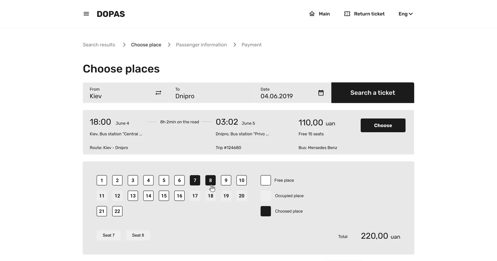

dopas.dp.ua
Designed from zero — platform launched and generating revenue.

Problem & Context
Before dopas.dp.ua, bus tickets in Dnipro were sold exclusively offline — at ticket offices and directly from drivers.
For a city with diverse ridership spanning all age groups, this meant queues, cash dependency, and no record of purchase.
Build an online ticketing platform from zero that works for everyone — from teenagers booking on a phone to elderly passengers unfamiliar with digital services.
Roadmap
- 1.0
Market Analysis
Audited existing ticketing platforms in Ukraine and nearby markets.
Competitive matrix - 2.0
Wireframes & Lo-fi
Mapped core user flows — search, seat selection, checkout, ticket storage.
User flow · Lo-fi wireframes - 3.0
Usability Study
Tested lo-fi prototype with users across age groups.
Usability report - 4.0
Mockups & Hi-fi
Translated validated flows into high-fidelity screens.
Hi-fi prototype - 5.0
Testing & Iterating
Refined edge cases — returns, errors, empty states.
Iteration log - 6.0
Hand-off
Full specs, annotations, developer handoff.
Figma handoff
Market analysis
Direct competitive audit
Reviewed 6 Ukrainian and regional ticketing platforms — Busfor and Infobus as direct competitors, Ukrzaliznytsia as the rail alternative travellers weigh against a bus.
Comparative analysis
Compared booking flows across competitors — search, seat selection, payment, post-purchase experience.
Key insight
Most platforms forced 7+ steps before purchase. None offered ticket storage or self-service returns. This defined dopas's differentiators from day one.
User flows
- StartOpens the website
- ScreenSearch routeFrom, to, date — nothing else above the fold
- ScreenView resultsTime, duration, seats left and price per departure
- DecisionIs this the trip?NoActionBack to search
- Yes
- ScreenSelect seatThe seat map, with the total updating
- ScreenPassenger infoOne block per seat, so a pair books in one pass
- ScreenPaymentThe fee is named before the card is
- SystemConfirmationThe ticket, ready to download
- EndTicket in hand
Screens
The booking flow as it shipped, in order — from the search on the landing page to the ticket in your inbox.
Usability testing
Seat selection too late in the flow
- Found
- Users tried to go back mid-form to choose seats, causing confusion and drop-off.
- Fix
- Moved seat selection before passenger info
No luggage option at booking
- Found
- Multiple users abandoned the flow thinking the platform didn't support extra luggage.
- Fix
- Luggage toggle added on passenger info screen
Price not visible until checkout
- Found
- Total cost including fees wasn't shown on results page — felt like hidden costs, reducing trust.
- Fix
- Full price shown on search results card
Return ticket not discoverable
- Found
- 3 of 5 users assumed one-way was the only option.
- Fix
- Round-trip toggle added to homepage search
Before and after
Drag the handle. The first pass was built in greys to settle structure before colour; the shipped version is the same screen once the palette and the card treatment landed.

What moves here is the visual pass, not the four fixes above: those changed the order of the flow and what each screen asks for, and the build from before the tests was never exported.
Launched late autumn 2020 into a market with no online alternative.
dopas.dp.ua has been live and earning since.
08 — ReflectionI’d start with a design system on day one — ad hoc components left inconsistencies to fix at handoff.
Two testing sessions caught four flow issues that would have shipped as bugs.